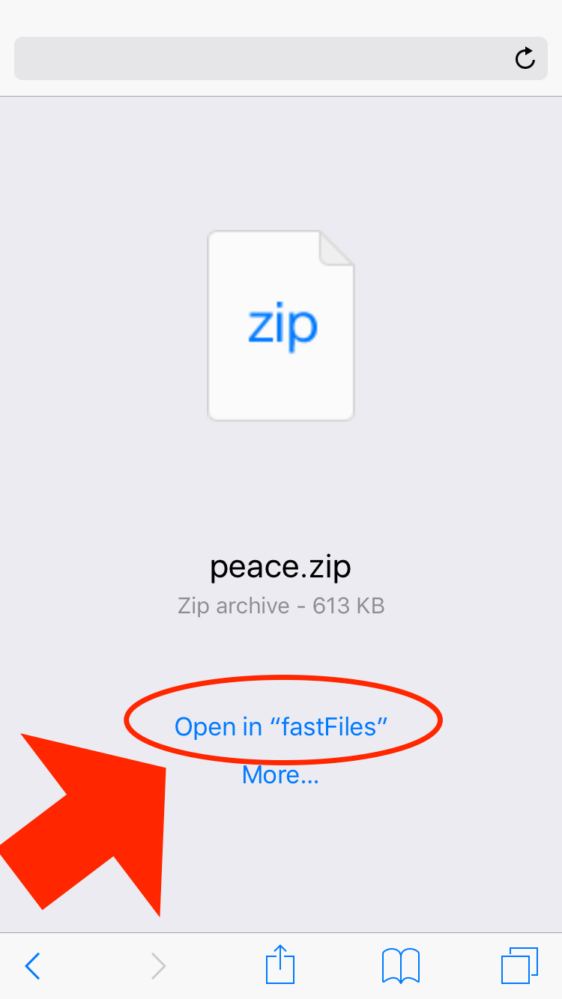
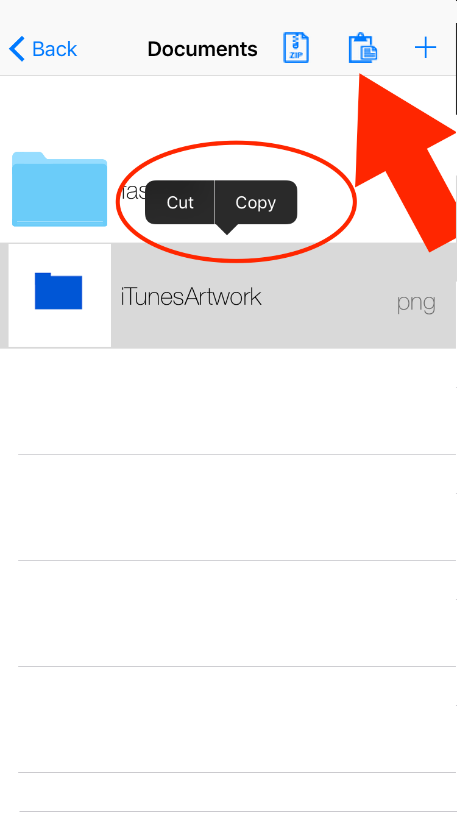

Instructions
Files type
fastFiles supports these files type:
-
Folders (View, edit and create)
-
ZIP (View and create)
-
PDF (View only)
-
Images (View only)
-
Playlists (Create and edit as folder)
-
Audios (Play)
-
Videos (Play)
-
Text (View, edit, create and show as HTML)
How to get files?
There are 4 methods to get files in fastFiles:
- Download in app: Press download button in main screen, and complete fields

- Download from other app: For example, if you download file from Safari, you can press "Open in" or "Options" (in other apps is generally the share button) and select fastFiles

- From iTunes: Open iTunes, select your device, select "Apps", scroll down to "File sharing", select fastFiles, and drag your file
NOTE: With this method, you need to relaunch app to sync files

- From iCloud Drive: Go to a folder, press "+" button, and "Import" (You can change app pressing "Locations")

How to export files?
There are 2 methods to export files:
- Share URL: You can slide on a file, and press "Share" button

- Documents provider: If an app supports this, you can import file from the Documents provider (if th app opens iCloud Drive instead fastFiles, you can press "Locations"):

How to move / copy files?
You can select a file and select "Copy" or "Cut"
Now, you can press the Paste button
